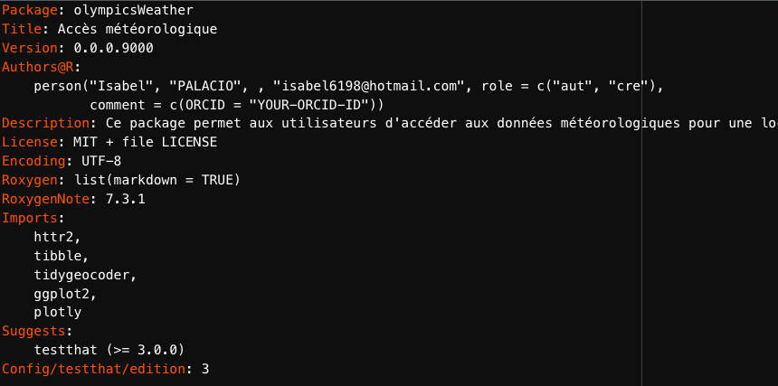
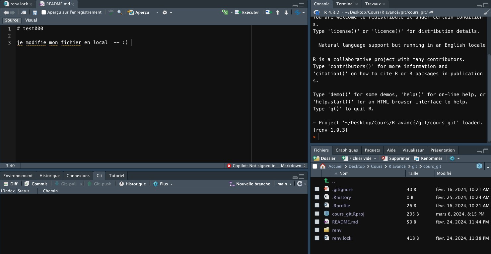

str(test$hourly[2][[1]], 1)
unlist(test$hourly[2][[1]])Création du package
Les informations relatives à l’utilisation du package olympicsWeather sont disponibles dans le post intitulé “post-with-code”. Dans cette section, nous aborderons exclusivement les questions relatives à la création et à l’installation du package.
Excercies
1. Créer son premier package: olympicsWeather
Pour débuter la création du package olympicsWeather, il est nécessaire d’installer certains packages utiles au développement de packages R. Les packages devtools, httr2 et jsonlite sont essentiels pour la manipulation de données en ligne et la structuration du package.
Création d’un nouveau projet de package
Après l’installation de ces packages, la prochaine étape consiste à créer un nouveau projet de package. La fonction create_package() est utilisé pour initialiser la structure de base du package. Vous pouvez spécifier le chemin où le package doit être créé, comme dans l’exemple ci-dessous :
create_package(path = “/Users/Isabel/Desktop/Cours/Ravancé/olympicsWeather”)
2. Question : Pourquoi n’est-il pas nécessaire d’installer explicitement usethis ?
Il n’est pas nécessaire d’installer explicitement usethis car devtools est déjà installé.Devtools dépend de usethis. Il utilise plusieurs fonctions de usethis pour faciliterle développement de packages en R, usethis est donc automatiquement installé comme une dépendance.”
3. Création d’un nouveau script appelé ‘get_weather_forecast’ avec use_r de la librairie usethis qui permet d’ajouter facilement un script R au projet de package:
usethis::use_r(“get_weather_forecast”)
librairies necessaires: library(httr2) et (tibble)
5. Décrivez le résultat. Qu’avons nous obtenu suite à notre requête ? Quels paramètres souhaitons nous changer si nous voulons pouvoir récupérer les prévisions météo pour tous les sites des JOs
test <- perform_request(latitude =48.85, longitude = 2.35 )
Le (tibble) contient des informations générales sur la requête météorologique et le lieu des prévisions, incluant la latitude, la longitude, le temps de génération, le décalage UTC, le fuseau horaire, entre autres. Il est composé de 5 lignes et 9 colonnes.
La colonne hourly est elle-même une liste qui englobe des données telles que l’heure (time), la température à 2 mètres (temperature_2m), la température ressentie (apparent_temperature), la probabilité de précipitations (precipitation_probability), et les précipitations (precipitation). Ces éléments peuvent aussi être des listes. Par exemple, pour extraire des informations structurées, on peut utiliser :
Cela permet de récupérer le deuxième élément de la colonne hourly, qui est encore une liste. Si nous souhaitons obtenir des prévisions pour tous les sites des Jeux Olympiques, des ajustements sont nécessaires concernant les coordonnées de longitude et de latitude. De plus, il est impératif de récupérer les données météorologiques dans une structure qui facilitera la manipulation ultérieure.
Question 7 et 8
Premier option : accès indexé aux différents types de données météorologiques
unnest_data <- function(test){
tibble(date_heure = as.POSIXct(unlist(test$hourly[1][[1]]), format = '%Y-%m-%dT%H:%M', tz = 'UTC'),
temperature_celsius = unlist(test$hourly[2][[1]]),
temperature_ressenti = unlist(test$hourly[3][[1]]),
porcentage = unlist(test$hourly[4][[1]]),
precipitation = unlist(test$hourly[5][[1]]))
}
perform_request(lat = 47.21725, long = -1.55336) |> unnest_data() -> y
names(y)Deuxime option :
Les données peuvent être directement extraites par leur nom :)
unnest_data <- function(meteo_data) {
# Extraction des données horaires et conversion en tibble
meteo_tibble <- tibble(
date_heure = as.POSIXct(unlist(meteo_data$hourly$time), format = "%Y-%m-%dT%H:%M", tz = "UTC"), #POSIXct avec le fuseau horaire UTC pour assurer que les heures sont correctement interprétées
temperature_celsius = unlist(meteo_data$hourly$temperature_2m),
temperature_ressentie = unlist(meteo_data$hourly$apparent_temperature),
precipitation_proba = unlist(meteo_data$hourly$precipitation_probability),
precipitation_mm = unlist(meteo_data$hourly$precipitation)
)
return(meteo_tibble)
}L’utilisation de unlist est nécessaire pour aplatir ces listes en vecteurs, rendant possible leur manipulation et conversion.Exemple avec la conversion directe en POSIXct avec as.POSIXct échoue, car as.POSIXct attend un vecteur et non uneliste
Fonction get_forecast
Le script concernant le package olympicsWeather, est diponible sur mon git https://github.com/isabel6198/olympicsWeather
Voici quelques explications :
Nous commençons par convertir une adresse en coordonnées GPS grâce à la fonction address_to_gps. Cette étape utilise le package tidygeocoder pour obtenir latitude et longitude d’une adresse textuelle en interrogeant des services de géocodage comme OpenStreetMap. Le résultat est un vecteur numérique avec la latitude et la longitude.
Ensuite, avec get_gps_coordinate, on transforme une adresse en coordonnées GPS, agissant comme une interface utilisateur pour address_to_gps et rendant le processus plus accessible.
La troisième étape est la fonction get_forecast, qui permet récupérer des prévisions météorologiques. Cette fonction générique gère différents types d’entrées, que ce soit une adresse ou des coordonnées GPS, en utilisant UseMethod pour orienter vers la méthode appropriée.
Pour les coordonnées GPS, get_forecast.numeric prend le relai. Elle assure que l’entrée est un vecteur numérique de deux éléments, effectue une requête API météo avec ces coordonnées et structure la réponse obtenue en un tibble.
Enfin, pour une adresse, get_forecast.character permet d’obtenir les prévisions météorologiques en partant d’un texte. Elle vérifie d’abord que l’entrée est bien une chaîne de caractères, la convertit en coordonnées GPS, puis fait appel à get_forecast.numeric pour récupérer les prévisions. Le résultat est un tibble contenant les informations météorologiques pour l’adresse spécifiée.
La documentation a été faite en utilisant les balises Roxygen et la description : 
Test
Dans la partie test un jeu de données est crée pour tester la fonction, avec la meme structure que celle recu par perfom_request.
Graphique
Pour fournir une sortie visuelle aux utilisateurs, j’ai développé une fonction dans le package qui génère un graphique interactif mettant en évidence les températures et les températures ressenties au fil du temps. L’utilisation de ggplot2 combinée à plotly permet d’obtenir des visualisations à la fois esthétiques et fonctionnelles, offrant aux utilisateurs la possibilité d’explorer les données de manière dynamique.
La fonction visualiser_temperature prend comme paremetre weather_forecast : Un Tibble ou un dataframe contenant les prévisions météorologiques à représenter graphiquement. Les données doivent inclure des colonnes spécifiques : date_heure pour les dates et heures des prévisions, temperature_celsius pour les températures mesurées en degrés Celsius, et temperature_ressentie pour les températures ressenties, également en degrés Celsius.
______________________________________________
Configurer son compte github
Question Sous RStudio, créez un nouveau projet. Choisissez l’option nouveau projet depuis un dépôt git. Quels fichiers sont présents à la racine du nouveau projet ? Décrivez

Comme nous pouvons observer ci-dessus, en choisissant d’utiliser Git et renv dans notre projet R, les fichiers et dossiers clés incluent :
.gitignorequi spécifie les fichiers et dossiers à ignorer par Git ;.Rhistoryqui garde une trace des commandes R précédemment exécutées ;.Rprofilequi contient des scripts de démarrage exécutés à chaque lancement de session R ;README.mdqui est souvent utilisé pour décrire le projet, comment l’installer ou l’utiliser ;renvqui est un dossier contenant les configurations de l’environnement de projet ;renv.lockqui est un fichier de verrouillage listant les dépendances exactes du projet pour garantir la reproductibilité.
En utilisant le client graphique de RStudio, faites un git push. Que s’est il passé cette fois-ci sur le dépôt github ?
En utilisant l’éditeur visuel de Git sous RStudio pour faire un commit, puis en poussant (push) les changements sur GitHub, ces modifications seront répercutées sur le dépôt distant sur GitHub. Après avoir fait un push du deuxième commit avec le message “mon deuxième commit”, le fichier README.md sur le dépôt GitHub sera mis à jour avec le contenu modifié que que j’ai commité localement.
______________________________________________
Projet questions
Que voyez-vous désormais sous github ?
Après avoir fait un commit de l’ensemble des fichiers de mon projet my_blog sous RStudio, puis un push vers le dépôt GitHub, je vois tous les fichiers du projet local maintenant sur le dépôt distant . Cela inclut les documents index.qmd, about.qmd, styles.css, _site, etc. ainsi que le post welcome/index.qmd et tout autre fichier ou configuration faisant partie du projet.
Que se passe t’il quand vous exécutez la commande
remotes::install_github(“<votre username>/olympicsWeather”) (remplacez <votre username> par votre username github) ?
La fonction install_github() du package remotes va :
Se connecter à l’API GitHub pour trouver le dépôt nommé olympicsWeather appartenant à isabel6198/olympicsWeather
Télécharger le package depuis ce dépôt GitHub.
Installer le package mon environnement R local depuis la source téléchargée.
remotes::install_github(“isabel6198/olympicsWeather”), contient mon package en mode public, donc il est chargé.
Posts de blog
Après avoir exécuté renv::snapshot(), le package olympicsWeather est correctement répertorié dans mon fichier renv.lock situé à la racine de mon projet de blog.
Le fichier .gitignore a été complété avec les fichiers qui ne doivent pas être versionnés.
Suite au commit, le dossier _site apparaît comme prévu. Cependant, j’ai rencontré un problème : pour publier ma page, GitHub ne propose de pointer que sur les dossiers racine (root) ou sur _docs et non _site, tel qu’indiqué dans le tutoriel du projet. Pour contourner ce problème, un dossier _docs a été créé et utilisé pour la publication de la page.